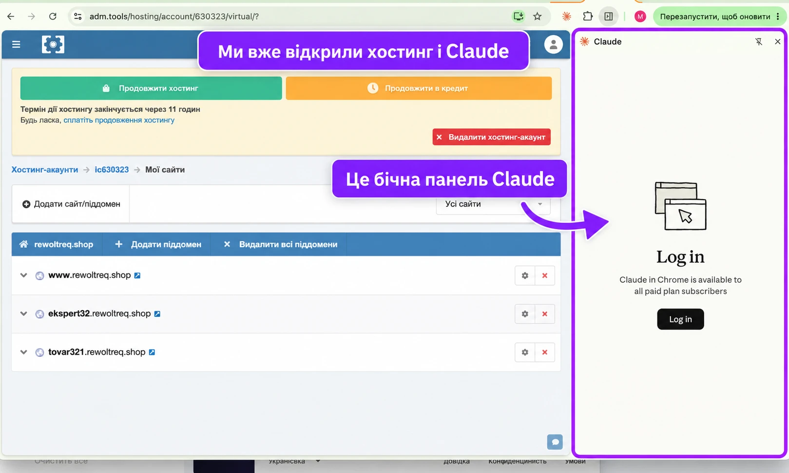
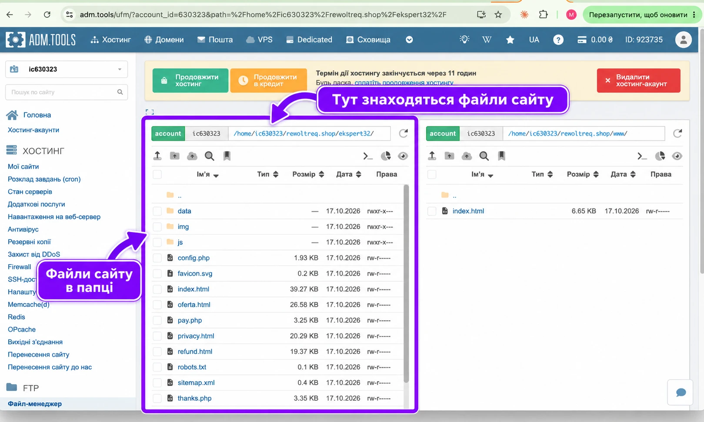
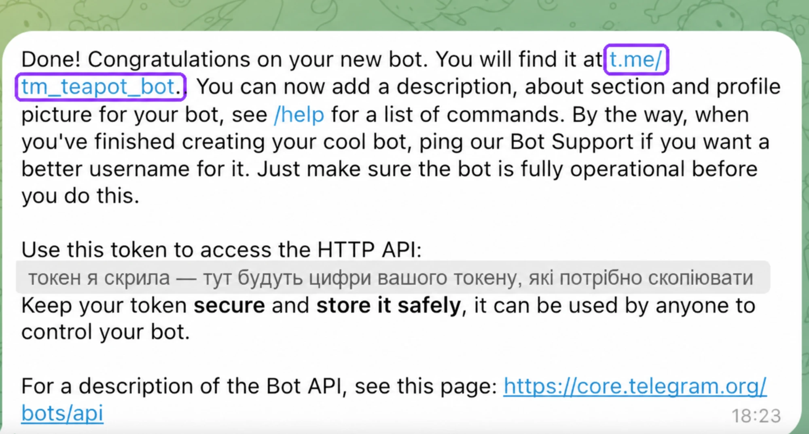
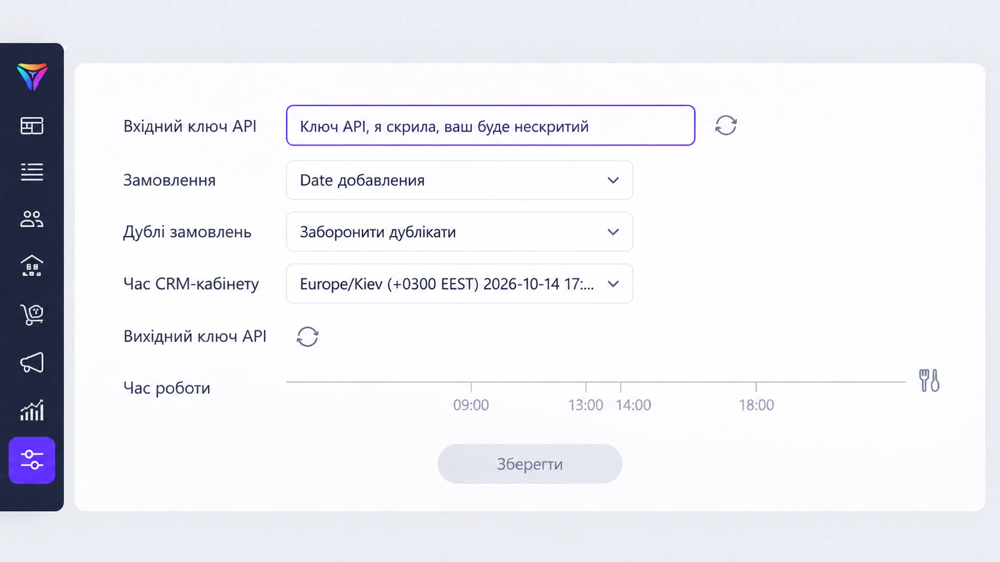
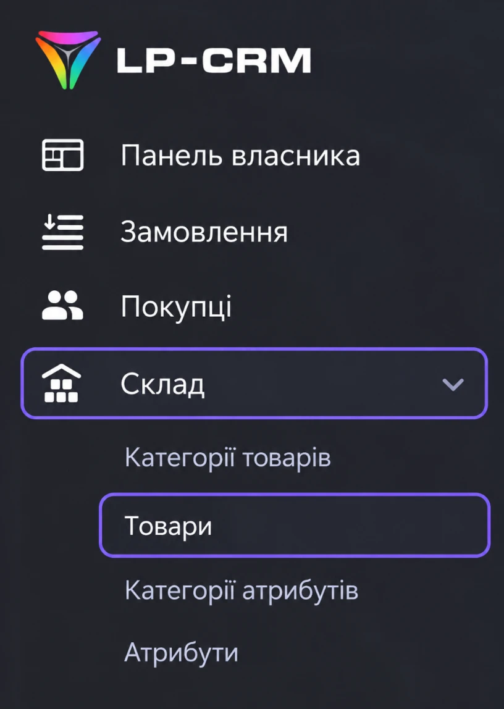
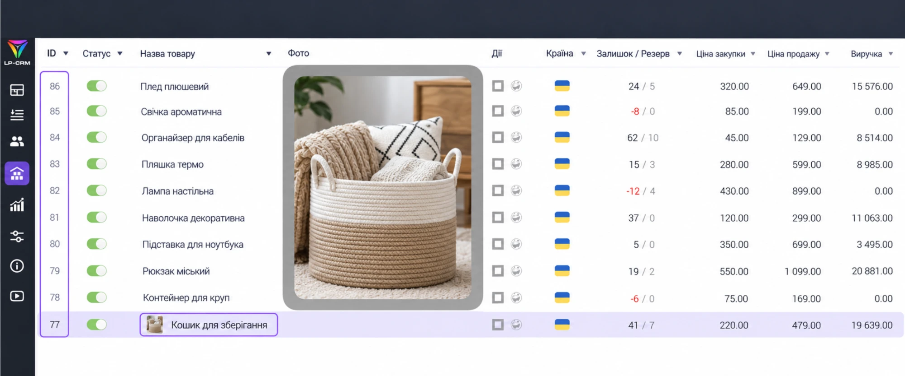

Односторінковий сайт (лендінг) — це одна сторінка, яка веде людину до однієї дії: купити, записатися або залишити заявку. У цьому блоці розбираємося, чому він продає і як має виглядати.
⏱ 10 хвилин📌 1 урок
Урок 1Що таке лендінг і чому він продає
01
Головні правила лендінгу
3 хвилини
🎯 Одна сторінка — одна ціль.Не «розповісти про все», а продати одне.
📱 90% людей приходять з телефона.Тому сайт спершу має бути зручним саме на телефоні.
⏱ У вас є 3 секунди.Перший екран одразу відповідає: що це, для кого і що робити.
🧱 Класична структура.Перший екран → біль клієнта → рішення → переваги → відгуки → ціна → форма заявки → питання та відповіді.
🔘 Кнопку видно на кожному екрані.«Купити» чи «Записатися» — завжди під рукою.
📝 Форма — лише ім'я і телефон.Кожне зайве поле зменшує кількість заявок.
💸 Для товару: ціна і довіра.Стара ціна перекреслена і нова, акція — тільки чесна. Доставка Новою поштою, оплата при отриманні, повернення 14 днів. Один товар — один сайт, не каталог.
02
Як виглядає сильний перший екран
2 хвилини
Заголовок з вигодою, фото товару, ціна і кнопка. Наприклад:
«Емальований чайник 2,5 л: затишок на вашій кухні»
+ фото чайника + ціна 499 грн замість 998 + кнопка «Замовити зі знижкою»
Живий приклад сайту для товаркиемальований чайник, зроблено скілом «Сайт під товар» · відкрийте з телефонаВідкрити
Типова помилка
Робити сайт «про себе» замість сайту «про вигоду клієнта».
03
Завдання
5 хвилин
Напишіть одним реченням, що ви продаєте і кому. Наприклад: «Продаю курс з манікюру для мам у декреті».
Блок 2
Де взяти приклад сайту
Не вигадуємо з нуля: знаходимо сайт-референс, розбираємо його на блоки, готуємо фото й тексти — і пишемо ШІ чітке завдання.
⏱ 40 хвилин📌 2 уроки + шпаргалка
Урок 1Референс — сайт, на який рівнятися
Кому цей урок
🎓 Експерт, курс, послуга — проходите обов'язково: за референсом ви зробите свій сайт у Блоці 3.
📦 Товарка — у вас два способи зробити сайт (детально — Блок 3, Урок 1):
Спосіб А — готовий скіл «Сайт під товар». Референс не потрібен: скіл сам бере фото й характеристики і будує сайт. Цей урок можна переглянути для натхнення і йти далі.
Спосіб Б — за референсом. Знаходите сайт, який подобається (Pinterest або бібліотека реклами Facebook), і Claude робить ваш сайт у такому стилі. Сайти виходять унікальні, не «як у всіх». Для цього способу урок проходите повністю.
01
Де шукати референс
15 хвилин
Референс — це чужий сайт, який вам подобається і який можна взяти за основу. Не копіюємо, а надихаємося структурою.
Pinterestшукаємо «landing page» + ваша ніша — ідеї, як може виглядати сайтВідкрити
Бібліотека реклами Facebookвведіть нішу й подивіться, куди ведуть оголошення конкурентів — ці сайти точно продаютьВідкрити
Як зрозуміти, що референс хороший
відкривається швидко і зручний на телефоні;
з першого екрана зрозуміло, що продають;
є ціна, відгуки й проста форма.
02
Шпаргалка: розбираємо референс на блоки
10 хвилин
Пройдіться сайтом зверху вниз і запишіть кожен блок одним рядком:
Перший екран: заголовок + що на фото + текст кнопки.
Який біль клієнта згадують.
Скільки переваг і які.
Як показані відгуки (скріни, відео, текст).
Як подана ціна (стара і нова, акція, таймер).
Які поля у формі.
Ця «карта блоків» і буде основою вашого сайту
Карту блоків зберігаємо — вставимо її в промпт у наступному уроці.
03
Що підготувати до наступного уроку
15 хвилин
Урок 2Як писати завдання для ШІ і просити правки
Формула хорошого запиту: хто ти + що створити + для кого + структура + вимоги
Так побудовані обидва промпти нижче. Чим конкретніше завдання, тим менше правок потім.
04
📦 Сайт для товарки — Спосіб Б: за референсом
10 хвилин
Знаходите референс (крок 01), розбираєте його на блоки (крок 02) — і Claude робить ваш сайт у такому самому стилі: своя структура, свій дизайн, не «як у всіх».
Шукаєте приклад сайту з чайником?
Його зроблено готовим скілом — це Спосіб А, він у Блоці 3. Тут — Спосіб Б, сайт за вашим референсом.
Це промпт для Способу Б
Коли ви робите сайт за референсом. Якщо обрали готовий скіл (Спосіб А) — цей промпт не потрібен, свій промпт для скіла ви візьмете в Блоці 3.
Промпт для товарки (Спосіб Б) — копіюйте і підставляйте своє
Промпт · сайт для товару за референсом
Ти — досвідчений маркетолог і веб-дизайнер.
Створи односторінковий сайт для продажу товару: [назва товару].
Референс — візьми за основу його структуру і стиль, але не копіюй тексти й фото: [посилання на сайт або скрін з Pinterest].
Карта блоків референсу: [вставте карту блоків з попереднього уроку].
Ціна: [ціна] грн, стара ціна: [стара ціна] грн.
Аудиторія: [хто купує], заходять з Instagram з телефона.
Мова сайту: українська.
Фото товару: [прикріплюю фото / посилання на товар].
Структура: перший екран з фото і кнопкою «Замовити»; біль клієнта; 5 переваг; фото товару; відгуки; акція з таймером; форма «ім'я + телефон»; доставка Новою поштою; питання та відповіді.
Вимоги: один файл index.html, адаптивний під телефон, сучасний дизайн, кнопки з анімацією.
05
🎓 Сайт для експерта, курсу чи послуги: приклад і промпт
10 хвилин
Тут продаємо не річ, а результат: обіцянка на першому екрані, про автора, програма, відгуки, ціна і запис.
Промпт для експерта — копіюйте і підставляйте своє
Промпт · сайт для експерта
Ти — досвідчений маркетолог і веб-дизайнер.
Створи односторінковий сайт для [курсу / консультацій / послуги]: [назва].
Результат для клієнта: [що він отримає].
Ціна: [ціна]. Аудиторія: [хто це].
Мова: українська.
Структура: перший екран з обіцянкою результату; для кого це;
про автора; програма або що входить; відгуки; ціна і кнопка;
питання та відповіді; форма «ім'я, телефон, Telegram».
Вимоги: один файл index.html, адаптивний під телефон, спокійний стильний дизайн.
06
Як просити правки — по одній за раз
5 хвилин
Зроби кнопки зеленими й округлимиДодай блок відгуків після перевагЗаголовок на першому екрані зроби коротшим і сильнішимПеревір, щоб на телефоні нічого не виходило за край екрана
Типові помилки
Запит в одне речення («зроби сайт») — результат виходить загальним. 10 правок одним повідомленням — ШІ щось пропускає. Не вказана мова — частина тексту виходить російською чи англійською.
Блок 3
Створюємо сайт з ШІ
Збираємо свій сайт. Для товарки — два способи: готовий скіл «Сайт під товар» (швидко) або за референсом (свій стиль). Для експерта — за шаблоном з Блоку 2.
⏱ близько години📌 2 уроки🧰 Claude
Урок 1Сайт для товарки
⇄
Два способи зробити сайт для товару
2 хвилини
⚡ Спосіб А — готовий скіл «Сайт під товар» · ~20 хвилинДаєте посилання на товар з Prom, ціну і назву магазину. Claude сам бере фото й характеристики, пише тексти, ставить ціни, робить форму заявки, підключає піксель і Telegram. Підходить для першого сайту і щоб швидко тестувати товари. → кроки 01–03
🎨 Спосіб Б — за референсом · ~40–60 хвилинБерете сайт-референс (Pinterest або бібліотека реклами Facebook), карту блоків і промпт з Блоку 2. Сайт виходить у вашому стилі, унікальний. Фото, ціни й тексти даєте самі, заявки в Telegram підключаєте в Блоці 6. → крок 04
Не знаєте, що обрати?
Перший сайт — Спосіб А. Хочеться свій стиль і «вау»-дизайн — Спосіб Б. Можна спробувати обидва на одному товарі й порівняти.
Яким має бути сайт для товару
Перший екран, ціна, форма, довіра — головні правила в Блоці 1. Скіл і промпт уже враховують їх.
01
Спосіб А: встановлюємо скіл «Сайт під товар»
5 хвилин
Скіл — це готова інструкція для Claude. Усередині — дизайн сайту і покроковий план: що в нас запитати, де взяти фото, як підключити бота й піксель, як залити сайт. Встановлюємо один раз, кожен новий сайт — у новому чаті.
Ось такий сайт ви отримаєте за цим скілом
Приклад: сайт для емальованого чайника, повністю зібраний скілом «Сайт під товар» — за одним промптом з кроку 03. Claude сам поставив фото, написав тексти, характеристики, ціну зі знижкою, таймер і форму заявки. У вас буде такий самий сайт — з вашим товаром, фото й цінами.
Перетягуємо його в чат Claude і пишемо: «Встанови цей скіл».
Відкриваємо новий чат — далі працюємо в ньому.
02
Де взяти ID пікселя Meta
5 хвилин
Піксель потрібен, щоб реклама бачила заявки з сайту. Для сайту потрібен лише його ID — довге число.
Відкриваємо Events Manager (Менеджер подій) у Meta Business.
Зліва — «Джерела даних», обираємо свій піксель. Пікселя ще немає — тиснемо «Підключити джерела даних» → «Веб» і даємо йому назву.
Під назвою пікселя — ID: число з 15–16 цифр. Копіюємо тільки цифри.
Events ManagerMeta Business · менеджер подійВідкрити
Детально — у відеоуроці
Там видно всі кнопки. Робите Спосіб Б? Після створення сайту напишіть Claude: «Підключи на сайт Meta Pixel з ID [ID]: PageView на всіх сторінках, Lead і Purchase на сторінці «Дякуємо»».
03
Спосіб А: збираємо сайт за промптом
20 хвилин
У новому чаті надсилаємо Claude завдання. Те, що виділено, змінюємо під себе. Можна надиктувати голосом.
Промпт · скіл «Сайт під товар»
Зроби сайт під товар: [посилання на товар на Prom]
Ціна: [499] грн, стара ціна: [998] грн. Знижка за 2 шт: [немає]
Назва магазину: [Посуд]
ID пікселя: [довге число з Events Manager]
Токен бота: [токен від BotFather]
ID групи для заявок: [-4839201764]
Якщо є LP-CRM:
Адреса кабінету: [назва.lp-crm.biz]
Ключ API: [вхідний ключ API]
ID товару в CRM: [77]
Ще немає бота чи пікселя?
Нічого страшного — пишіть без цих рядків. Бота створимо в Блоці 6 і підключимо одним повідомленням: «Підключи Telegram: токен …, група …».
Що робить Claude
Забирає фото й характеристики зі сторінки товару. Замало якісних фото — шукає ще, але саме цієї моделі.
Пише текст українською, ставить ціни і знижку за 2 шт, якщо вона є (немає — блок «Беріть 2» не показується).
Підключає піксель і бота та надсилає у вашу групу тестове повідомлення.
Показує готовий сайт — правимо словами:
прибери повторизміни об'єм на 2,5 лзроби заголовок коротшим
Посилання краще давати з Prom
Temu й AliExpress без входу в акаунт часто не показують сторінку товару. Тоді Claude знайде ту саму модель на Prom і візьме фото звідти — перевірте, що це точно ваш товар.
Цифри перевіряємо самі
Розміри, комплектацію, колір звіряємо з постачальником. Відгуки Claude не вигадує: блок відгуків вмикаємо лише тоді, коли є справжні.
Отримали сайт — вносимо щонайменше 3 правки, по одній за повідомлення:
зроби заголовок коротшимзаміни фото на першому екранідодай блок доставки
Заявки в Telegram підключимо в Блоці 6.
Урок 2Сайт для експерта, курсу чи послуги
Яким має бути сайт експерта
Головне — результат для клієнта, про автора, програма, відгуки, ціна і запис. Детально і з прикладом — у Блоці 2, крок 05.
05
Генеруємо сайт і вносимо 3 правки
30 хвилин
Беремо промпт для експерта з Блоку 2 і підставляємо своє.
Надсилаємо в Claude, отримуємо файл index.html.
Вносимо щонайменше 3 правки — по одній за повідомлення.
Блок 4 · для допитливих
Що всередині сайту
Простими словами, без програмування. Так ви розумітимете, що просити у ШІ і чому сайт складається з кількох файлів.
⏱ 10 хвилин📌 1 урок
Цей блок можна пропустити
Сайт працюватиме і без цих знань.
Урок 1HTML, CSS, JS і зображення
01
З чого складається сайт
5 хвилин
Що
Простими словами
Аналогія
HTML
вміст: тексти, кнопки, блоки
стіни й кімнати будинку
CSS
дизайн: кольори, шрифти, відступи
ремонт і меблі
JS
дії: таймер, слайдер, звук
електрика в будинку
Images
фото й іконки
картини на стінах
02
Три правила файлів
3 хвилини
📄 Головний файл сайту завжди називається index.html.Саме його браузер відкриває першим.
🗂 Фото — в окрему папку.Наприклад images, і стискаємо до 200–300 KB.
🔤 Назви файлів — латиницею без пробілів.foto-1.jpg, а не Фото 1.JPG.
Блок 5
Ставимо сайт на хостинг
Щоб сайт відкривався в усіх за посиланням, його треба розмістити. Працюємо з Хостинг Україна (ukraine.com.ua) і своїм доменом: сайт ставимо вручну або доручаємо це Claude у Chrome.
⏱ 40–50 хвилин📌 3 уроки
Урок 1Розміщуємо сайт
Два способи поставити сайт на хостинг
🖐 Вручну — цей урок. Claude готує ZIP-архів сайту, а ви самі завантажуєте його у файл-менеджер хостингу і розпаковуєте. Так ви розумієте, як влаштований сайт на хостингу, і зможете все перевірити й виправити самі.
🤖 Автоматично — урок «Claude у Chrome». Claude сам заходить у файл-менеджер, завантажує і розпаковує сайт, а ви лише дозволяєте й перевіряєте.
Результат однаковий — сайт відкривається за вашою адресою. Раджу спершу один раз зробити вручну, а далі — як зручніше.
01
Де житиме сайт
2 хвилини
🏠 Хостинг Українаukraine.com.ua, панель керування — adm.tools. Хостинг ≈ $3–5 / міс, домен ≈ $10–15 / рік.
🌐 Своя адресаНаприклад tovar.vash-domen.shop — сайт на піддомені вашого домену.
📤 Як ставимоВручну (крок 02) або Claude у Chrome сам (Урок 2).
Один домен — скільки завгодно сайтів
Через піддомени (tovar1.vash-domen, kurs.vash-domen) — тож за кожен новий сайт окремо платити не треба.
02
Хостинг Україна: ставимо вручну (ZIP)
10 хвилин
Claude дає архів — ми самі ставимо його на хостинг.
Після входу — панель adm.tools: «Мої сайти» і «Файл-менеджер» тут.

Зліва — хостинг («Мої сайти»), справа — бічна панель Claude. Перший раз тиснемо «Log in».Запит доступу — переглядаємо і дозволяємо для вкладки хостингу.
Пароль — тільки ви
Не пишемо Claude пароль від хостингу і не просимо його ввести. Входимо самі — Claude працює вже у відкритому кабінеті. Банкінг і пошту на час роботи закриваємо.
06
Готуємо файли готового сайту
5 хвилин
Повертаємося до чату, де створювали сайт, і надсилаємо:
Промпт · фінальний архів сайту
Підготуй фінальну версію мого сайту для завантаження на хостинг.
Збери ZIP-архів із усіма потрібними файлами та зображеннями.
Головний файл має називатися index.html і бути безпосередньо в корені архіву.
Перевір шляхи до фото, стилів і скриптів.
Дай архів для завантаження.
Чат, де створювали сайт: Claude дає ZIP-архів.
Зберігаємо ZIP-архів на комп'ютер.
Сайт — це один HTML-файл? Просимо зберегти його як index.html і уточнити, чи потрібні окремі зображення або інші файли.
07
Даємо завдання Claude у бічній панелі
5–10 хвилин
Повертаємося на вкладку хостингу. У бічну панель Claude вставляємо текст, замінивши виділене:
Промпт · завантажити сайт на хостинг
Допоможи завантажити готовий сайт на мій хостинг.
Потрібний домен або піддомен: [адреса вашого сайту].
Я вже увійшла в кабінет. Спочатку знайди саме цей сайт і перевір його кореневу папку.
Використовуємо фінальний архів [назва ZIP-файлу]. Допоможи завантажити його та розпакувати.
Якщо файл потрібно вибрати на моєму комп'ютері вручну, скажи, коли й куди його додати.
Файл index.html має лежати в кореневій папці цього сайту.
Якщо там уже є файли, спочатку покажи, які саме, і запитай перед заміною.
Після завантаження відкрий адресу сайту та перевір фото, кнопки і вигляд на телефоні.
Якщо потрібна моя дія, пояснюй її покроково.
Claude просить файл?
Claude у бічній панелі не бачить попередній чат. Коли попросить архів — додаємо його у доступний спосіб або самі обираємо ZIP у вікні завантаження на хостингу.

Так виглядає результат: зліва — коренева папка піддомену (на скріні ekspert32) з усіма файлами, index.html одразу в ній. Справа — www, основний сайт, його не чіпаємо.Піддомену ще немає — Claude може створити і його
Промпт · створити піддомен
У вкладці хостингу я вже увійшла в кабінет.
Створи піддомен [shop] для домену [ваш-домен.com.ua].
Коли створиш — скажи, як називається папка цього піддомену у файл-менеджері.
08
Перевіряємо результат
5 хвилин
Відкриваємо адресу сайту в новій вкладці і на телефоні.
Вже підключені форма заявки, Telegram чи оплата — перевіряємо перехід або тестову заявку.
Сайт відкривається за адресою домену або піддомену.
Порожня сторінка або помилка? Надсилаємо Claude скріншот і текст:
Промпт · щось не так після завантаження
Ось що бачу після завантаження.
Перевір кореневу папку, розташування index.html і шляхи до файлів.
Допоможи виправити.
Практичне завдання
Відкрийте хостинг із бічною панеллю Claude, завантажте свій сайт і перевірте його за посиланням. Результат уроку — ваш сайт відкривається за адресою домену або піддомену.
Урок 3Що підключаємо після хостингу
09
SSL, домен, піксель і документи
10 хвилин
🔒 SSL-сертифікат (Let's Encrypt, безкоштовно).Дає замочок у браузері. Без нього браузер пише «Не захищено». В adm.tools вмикається в налаштуваннях сайту.
🌐 Домен.Коротка й зрозуміла назва, бажано .com.ua, .shop чи .online.
📈 Піксель Meta.Щоб реклама бачила заявки. Сайт зі скілу підключає його сам — потрібен лише ID пікселя (де взяти — Блок 3).
📄 Оферта й політика конфіденційності.Обов'язкові для оплати карткою і бажані для реклами. Сайт зі скілу вже має ці сторінки — треба лише вписати ФОП і контакти.
?
Якщо щось не так
Замість сайту — заглушка хостингу
Зачекайте 5–10 хвилин. Не минуло — перевірте, що файли лежать прямо в папці сайту, а не у вкладеній (www/site/index.html). Перенесіть їх на рівень вище і видаліть стару заглушку index.html.
Сайт без https або з попередженням
Сертифікат видається автоматично, іноді до години. Зачекайте й оновіть сторінку. Не з'явився — в adm.tools увімкніть SSL Let's Encrypt для свого сайту.
Бачу стару версію сайту
Натисніть Ctrl+F5 (на Mac — ⌘+Shift+R) або відкрийте сайт у режимі інкогніто.
Блок 6
Заявки та оплата
Людина заповнює форму → сайт надсилає повідомлення боту → бот пише вам у Telegram-групу: ім'я, телефон, скільки штук і на яку суму. А для онлайн-продажу — кнопка оплати.
⏱ 30 хвилин📌 2 уроки
Урок 1Заявка з сайту в Telegram
01
Створюємо бота в @BotFather
5 хвилин
Відкриваємо в Telegram @BotFather і тиснемо «Старт».
Надсилаємо команду /newbot.
Назва бота — будь-яка, наприклад «Посуд — заявки».
Адреса — латиницею, обов'язково з bot у кінці: tm_teapot_bot. Зайнято — вигадуємо іншу.
У відповіді беремо дві речі: посилання на ботаt.me/назва_bot (на скріні — t.me/tm_teapot_bot) і токен — довгий рядок під «Use this token to access the HTTP API».

Обведене посилання — за ним знайдемо бота. Токен — під «Use this token to access the HTTP API» (на скріні закритий).
Якщо токен і ID групи ви вже давали в промпті з Блоку 3 — усе підключено, переходьте до кроку 05. Якщо ні — напишіть Claude у чаті з сайтом:
Промпт · підключити Telegram
Підключи форму сайту до Telegram-бота.
Токен бота: [токен від BotFather]
ID групи для заявок: [-4839201764]
Надішли тестове повідомлення в групу.
04
LP-CRM — якщо вона у вас є
5 хвилин
Ведете замовлення в LP-CRM — Claude підключить і її: заявка падатиме і в Telegram, і в CRM. Немає CRM — пропускаємо крок.
Потрібні три речі: ключ API, ID товару і адреса кабінету вигляду назва.lp-crm.biz.
Ключ API
Заходимо в LP-CRM → зліва значок налаштувань (два повзунки).
Копіюємо «Вхідний ключ API».

Два повзунки → «Вхідний ключ API». Ключ на скріні прихований.
ID товару
«Склад» → «Товари».
Число в першій колонці зліва — ID товару.

Меню зліва: «Склад» → «Товари».

Перша колонка — ID. Наприклад, у «Кошика для зберігання» ID 77.
Кілька офісів?
Claude запитає, у який офіс падають заявки. Потрібен номер офісу, а не назва — уточніть у того, хто налаштовував CRM.
Ключ API — теж секрет
З ним можна створювати замовлення у вашій CRM. Тільки для Claude.
05
Тестова заявка
5 хвилин
З телефона залишаємо заявку на своєму сайті. В імені пишемо «ТЕСТ, не дзвонити».
Перевіряємо, що заявка прийшла в групу в Telegram.
Відкрилася сторінка «Дякуємо» — значить, піксель передав заявку і покупку.
В Events Manager у пікселі мають з'явитися PageView, Lead і Purchase — іноді через 20–30 хвилин.
Заявка не прийшла в Telegram
Перевірте, що бот є в групі, а ID групи починається з мінуса. Потім напишіть Claude: «Заявка не прийшла, перевір бота» — він надішле тестове повідомлення і знайде причину.
Урок 2Приймаємо оплату на сайті
06
Обираємо спосіб оплати
10 хвилин
Спосіб
Коли підходить
Monobank-посилання
найпростіший старт: кнопка «Купити» веде на посилання
WayForPay / LiqPay
для ФОП: оплата карткою, автоматичні сповіщення
Оплата при отриманні
товарка з доставкою Новою поштою
Створюємо платіжне посилання в сервісі оплати.
Пишемо Claude: «Постав на кнопку "Купити" посилання [посилання] і зроби сторінку подяки після оплати».
Обов'язково на сайті для онлайн-оплати
Контакти, оферта, умови повернення, політика конфіденційності, реквізити ФОП.
Блок 7
Після запуску
Сайт працює. Тепер — як швидко його змінювати і що перевірити, перш ніж запускати рекламу.
⏱ 15 хвилин📌 урок + чек-лист
Урок 1Як змінювати сайт за 5 хвилин
01
Ціна, фото, тексти — за 5 хвилин
5 хвилин
Відкриваємо чат, де робили сайт (або завантажуємо в Claude свій index.html).
Просимо одну зміну за раз:
Зміни ціну на 999 грнЗаміни фото в першому блоці на foto-new.jpgДодай питання про доставку
Хостинг: просимо Claude зібрати новий архів і ставимо його замість старого — вручну або через Claude у Chrome.
Оновлюємо сторінку. Змін не видно — Ctrl+F5 або очистіть кеш.
ШпаргалкаЧек-лист перед запуском
02
Перевіряємо все перед рекламою
10 хвилин
🎉 Усе відмічено? Ваш сайт готовий приймати клієнтів!
Надішліть у чат курсу посилання на свій сайт і скрін тестової заявки з Telegram.